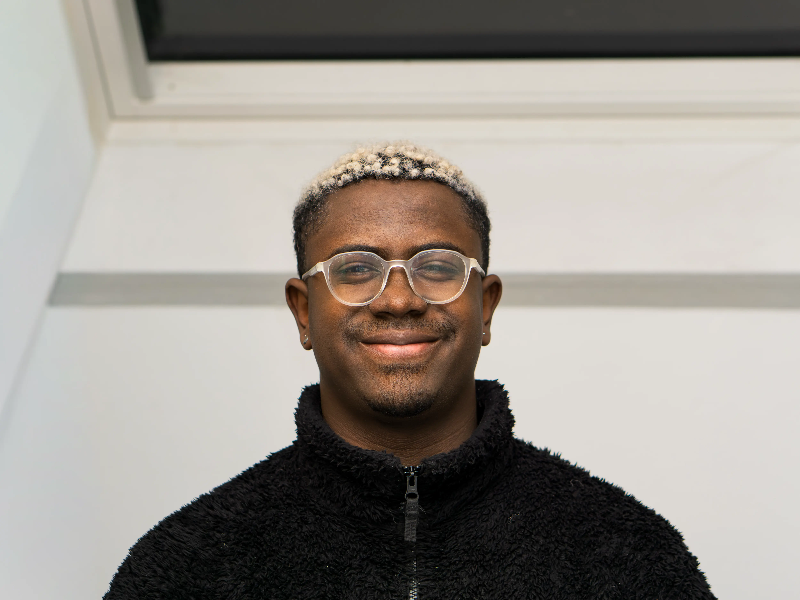

I am a photographer based in Strasbourg, France, specializing in capturing authentic moments across travel, portraiture, and sports.
My work is driven by a passion for visual storytelling and a constant pursuit of the perfect light. Whether I am shooting a high-speed sports event or a quiet portrait, my goal is to create compelling, timeless images.
Available for freelance projects and collaborations.